12
Performing Reliability Analysis
This chapter describes how to perform RelIability analysis, using the Cadence® Virtuoso® Reliability Simulator interface in ADE Explorer. This interface is only supported for Spectre and AMS.
See the following topics for more information:
- Introduction
- Specifying Reliability Options
- Running the Reliability Simulation
- Viewing the Reliability Simulation Results
- Viewing the Reliability Aged Netlist
- Annotating Simulation Results to the Schematic
Introduction
Reliability Simulator performs reliability simulation to analyze the effects of reliability defects, such as Hot-Carrier Injection (HCI), Negative Bias Thermal Instability (NBTI)/ Positive Bias Thermal Instability (PBTI) or self-heating, on the circuit and predict the reliability of designs in terms of performance.
For more information about HCI, NBTI, and PBTI, see
There are two analysis modes available:
Important points to note:
- Currently, reliability analysis is run with Sweeps and Corners and Monte Carlo run modes.
- Reliability analysis supports stb, sp, pss, pnoise, hb, and hbnoise analyses. These analyses are not supported when gradual aging is enabled.
- Stress simulations for reliability analysis require a transient analysis.
To run a reliability simulation, you need to perform the following tasks:
- Specify Reliability options
- Run the Reliability simulation
- View the Reliability simulation results
- View the Reliability aged netlist
- Annotate simulation results to the schematic
Specifying Reliability Options
To specify Reliability options, follow the steps listed below:
- Ensure that a reliability model is included and a transient analysis is set up.
-
In the Setup assistant pane, expand the Reliability Analyses node and click where it says Click to add reliability analysis setup.
The Reliability Analysis Editor form opens.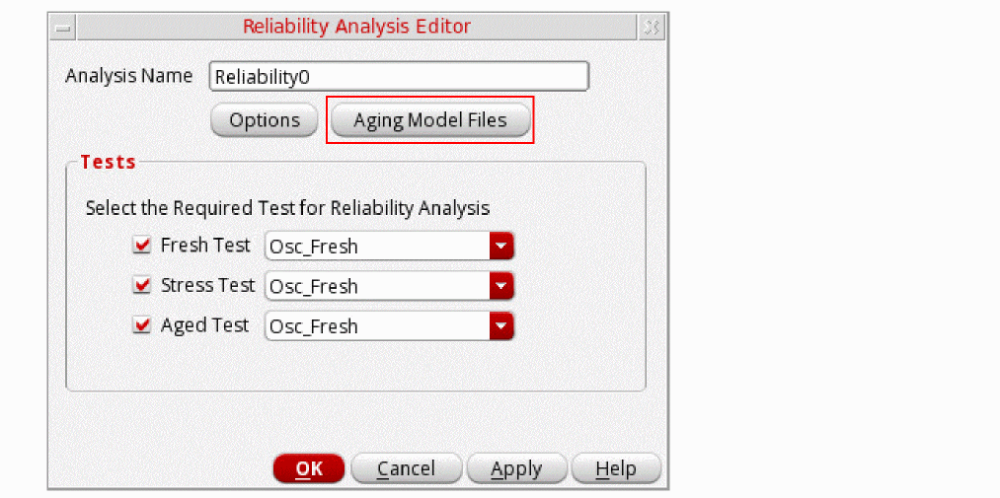Name of the selected test appears in the fields: Fresh Test, Stress Test, and Aged Test. The Aging Model Files command is displayed in the Reliability Analysis Editor form only if the displayAgingModelFiles environment variable is set to true. See the Specifying Aging Model Files section for more information.
-
Click Options to open the Reliability Options form to configure options for the reliability analysis. For more information about these options, see the Reliability Options Form section in the Virtuoso ADE Assembler User Guide.
The Reliability Options form appears.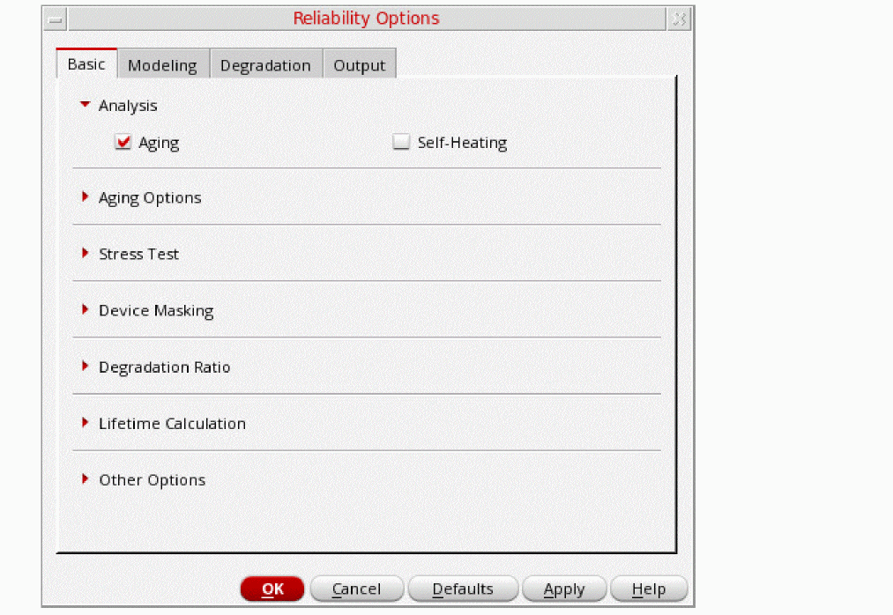 - Specify the required options and click OK.
For Spectre Simulator, setting up transient analysis is required before running stress simulation. However, aging simulations can be run with setting up either AC or DC analysis.
For running the reliability simulation with stress, you must specify the transient analysis, and then you can add AC or DC analyses if required.
After running the simulation, reliability options are netlisted as shown below:
Specifying Aging Model Files
envSetVal("maestro.gui" "displayAgingModelFiles" 'boolean t)
Perform the following steps to specify the model files to be used for aging or self-heating analysis for the stress or aged tests:
-
In the Reliability Analysis Editor form, click Aging Model Files, as shown in the following figure.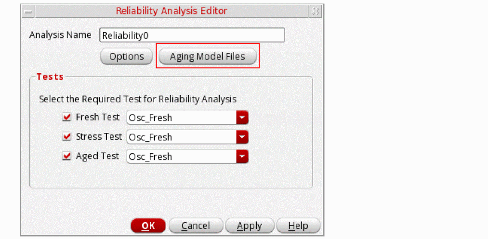The the Aging/Self-Heating Model Setup form appears.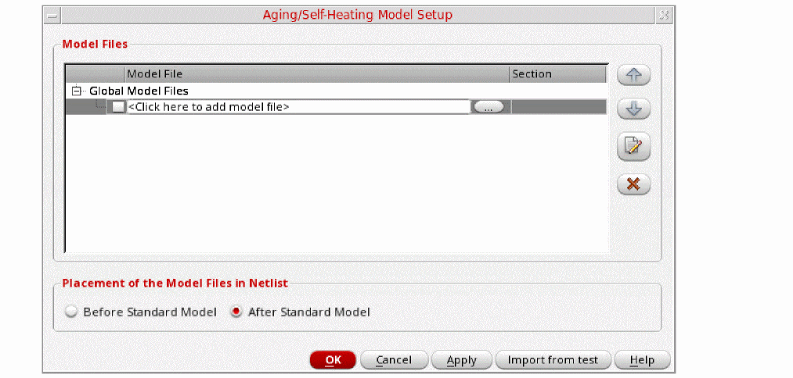
-
In the Model File column, type the path and file name of the model file you want to use.
Alternatively, you can click the ellipsis button (...) to open the Choose Model File form. Select a valid model file and click Open. -
In the Section column, select a section from the drop-down list.
A model file can have zero or more sections. If a model file contains no sections, there is no drop-down list available. The section you select determines which model definition the simulator uses. -
In the Placement of the Model Files in Netlist section, select one of the following options to define whether you want to print the aging-specific model file before or after the standard model files in the netlist:
- Before Standard Model: Prints the aging model file before the standard model file in the netlist
-
After Standard Model: Prints the aging model file after the standard model file in the netlistYou can also specify these options by setting the defaultAgingPlacementType environment variable.
Specifying Reliability Options
You can specify the reliability options in the Reliability Options form. For more information about these options, refer to
Output Device Characteristic Degradation Settings
The Output Device Characteristic Degradation Settings form contains options shown in the following figure.
The options available on the Output Device Characteristic Degradation Settings form are described below.
- Enable output device characteristic degradation—Requests RelXpert Reliability Simulator to generate device degradation (gds, gm, Idlin, Idsat, Vth degradation) for the specified age time period.
Set vdd
- Vdd(V)—Specifies the operation voltage for the circuit or target model.
-
Model names—Specifies the model used in the .output_device_degrad file for the adjacent field. This field supports wildcards. For example,
n*can be specified instead ofnmos1. - Vdd—Lists the added Vdd values in the table.
- Model names—Lists the model names specified for the added Vdd values.
- Add—Adds a new model specifying the operation voltage. Multiple model names may be added.
- Change—Updates the modifications after a particular model in the table is modified.
- Delete—Deletes the selected row.
- Vgsat(V)—Specifies Vgs value for Idsat measurement. The path to the corresponding model files must be specified in the Model names field.
- Vdsat(V)—Specifies Vds value for Idsat measurement. The path to the corresponding model files must be specified in the Model names field.
- Vglin(V)—Specifies Vgs value for Idlin/Vt/Gm measurement. The path to the corresponding model files must be specified in the Model names field.
- Vdlin(V)—Specifies Vds value for Idlin/Vt/Gm measurement. The path to the corresponding model files must be specified in the Model names field.
- Specify simulator path—If selected, enables or disables the specified simulator path.
- Simulator path—Specifies the full path for the simulator that is used during aging simulation.
Vth calculation (constant current method)
- Vdconst(V)—Specifies the constant drain voltage for calculating the threshold voltage by using the Vt_const_current method.
- ldconst(A)—Specifies the constant drain current for calculating the threshold voltage by using the Vt_const_current method.
- ldconstwl(A)—Specifies the constant drain current related to the transistor’s width(W) and length(L).
- Vgstep(V)—Specifies the gate voltage (Vg) sweep step size for calculating the device degradation(Vth, ids, idling, gds, and gm degradation). The path to the corresponding model files must be specified in the Model names field.
- Vsconst(V)—Specifies the constant source terminal voltage for calculating the threshold voltage degradation. The path to the corresponding model files must be specified in the Model names field.
- Nmos vbconst(V)—Specifies the constant substrate terminal voltage for NMOSFET for calculating the threshold voltage degradation. The path to the corresponding model files must be specified in the Model names field.
- Pmos vbconst(V)—Specifies the constant substrate terminal voltage for PMOSFET for calculating the threshold voltage degradation. The path to the corresponding model files must be specified in the Model names field.
- Nmos vgsweep start (V)—Specifies the start point of the sweep voltage of the NMOSFET gate terminal for calculating the threshold voltage degradation. The path to the corresponding model files must be specified in the Model names field.
- Pmos vgsweep start (V)—Specifies the start point of the sweep voltage of the PMOSFET gate terminal for calculating the threshold voltage degradation. The path to the corresponding model files must be specified in the Model names field.
- Nmos vgsweep end (V)—Specifies the stop point of the sweep voltage of the NMOSFET gate terminal for calculating the threshold voltage degradation. The path to the corresponding model files must be specified in the Model names field.
- Pmos vgsweep end (V)—Specifies the stop point of the sweep voltage of the PMOSFET gate terminal for calculating the threshold voltage degradation. The path to the corresponding model files must be specified in the Model names field.
- Use source current—If selected, enables or disables the drain current to calculate the degraded threshold voltage with vt_const_current method.
- Use drain current—If selected, enables or disables the source current to calculate the degraded threshold voltage with vt_const_current method.
- Use spectre for const current—If selected, enables or disables the const current method to calculate the threshold degradation value.
Migrating Reliability Setup from ADE L
If you have defined a reliability setup in an ADE L state, you can migrate it to Explorer by following these steps:
-
From the Menu bar, choose Session – Load ADE L State to load the previously saved ADE L state in the current session.
The Loading Sate – ADE Explorer form appears.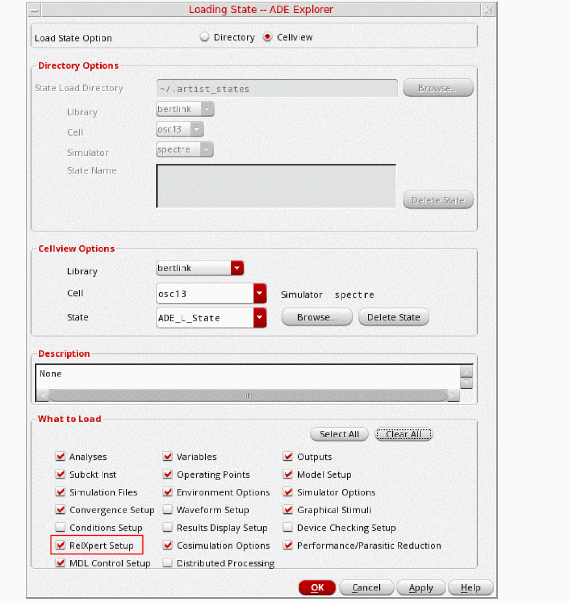 - From the Load State Option, select Cellview.
- In the Cellview Options section, select the ADE L state from which you want to migrate the reliability setup by defining library, cell, and state.
- In the What to Load section, select the RelXpert Setup check box.
-
Click OK.
The reliability setup from the ADE L state is migrated to the current Explorer session. -
To view the migrated setup, expand the Reliability Analyses node in the Setup assistant, as shown in the following figure.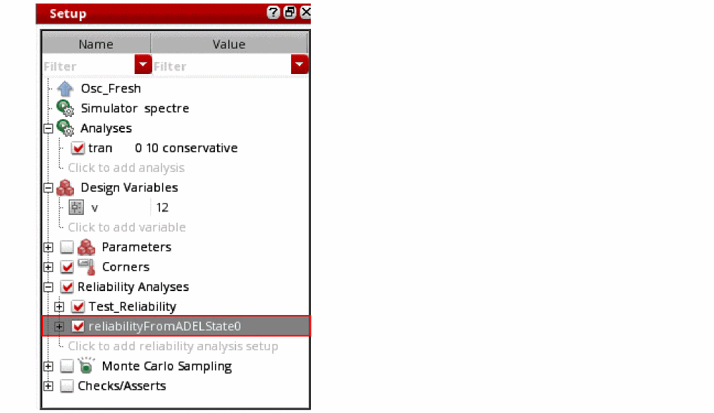
You can also load the reliability settings from one reliability setup to another reliability setup. For more information, see the
Running the Reliability Simulation
Perform the following steps to run a reliability simulation:
- Ensure that the following is done:
- Choose Simulation – Run or Netlist and Run or click the run button, .
-
Reliability Simulation always runs in batch mode. Therefore, the ADE Explorer mode too is automatically set to batch when you enable Reliability, and the following message is displayed in CIW:
*WARNING* The Spectre run mode needs to be 'batch' when running RelXpert. Automatically setting the run mode to 'batch'. - ADE Explorer does not support running multiple reliability analyses simultaneously. Ensure that only one reliability analysis is enabled at a time or use ADE Assembler to run multiple reliability analyses simultaneously.
Viewing the Reliability Simulation Results
Right-click in a row on the Results tab and choose Reliability Data to access the Reliability simulation results. You can use this menu to view the following results:
Device Lifetime and Degradation Results
Perform the following steps to view the Device Lifetime and Degradation results:
-
Right-click in a row on the Results tab and choose Reliability Data – Device Lifetime and Degradation.
The Device Lifetime and Degradation Results form appears.
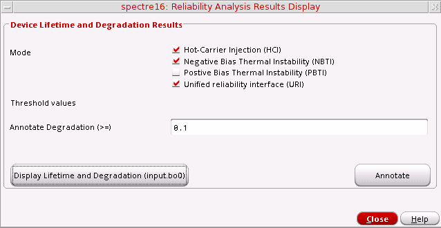
Model Parameter Changes Results
Perform the following steps to view the Model Parameter Changes Results:
-
Right-click in a row on the Results tab and choose Reliability Data – Model Parameter Changes.
The Model Parameter Changes Results form appears displaying the fresh and aged SPICE model parameter information.
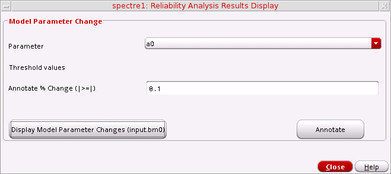
Viewing the Reliability Aged Netlist
The aged netlist can be used to view the degradation data generated by RelXpert Reliability Simulator.
To view the aged netlist, do the following:
-
Right-click in a row on the Results tab and choose Reliability Data – Aged netlist.
The Reliability Simulator generated degradation netlist is displayed.
Annotating Simulation Results to the Schematic
Perform the following steps to annotate the Device Lifetime and Degradation Results to the schematic:
-
Right-click in a row on the Results tab and choose Reliability Data – Device Lifetime and Degradation Results.
The Device Lifetime and Degradation Results form appears. The threshold rules corresponding to the selected modes are displayed in the form. -
Select the threshold rules based on which you want to annotate the results.
The fields containing the default threshold values for the selected rules become available. - Modify the threshold values for the selected rules, if required.
-
Click Annotate.
The instances to which the results are annotated are highlighted in yellow on the schematic.
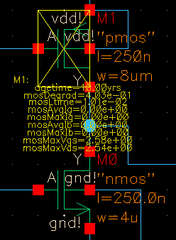
Similarly, you can annotate other types of reliability results.
Saving Reliability Options
You can save the values of reliability options specified in the Reliability form to a text file and later load these values back into Reliability form.
Perform the following steps to save reliability options specified in the Reliability form to a text file.
-
Choose Simulation – Reliability – Save Options.
Alternatively, right-click the test name in the Setup assistant and choose Reliability – Save Options.
The Saving form appears.
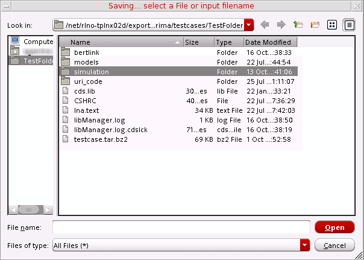 - Specify the directory and type a name for the file.
-
Click Save.
A text file containing the reliability options specified in the Reliability form is created in the specified directory. You can edit this file in your default text editor.
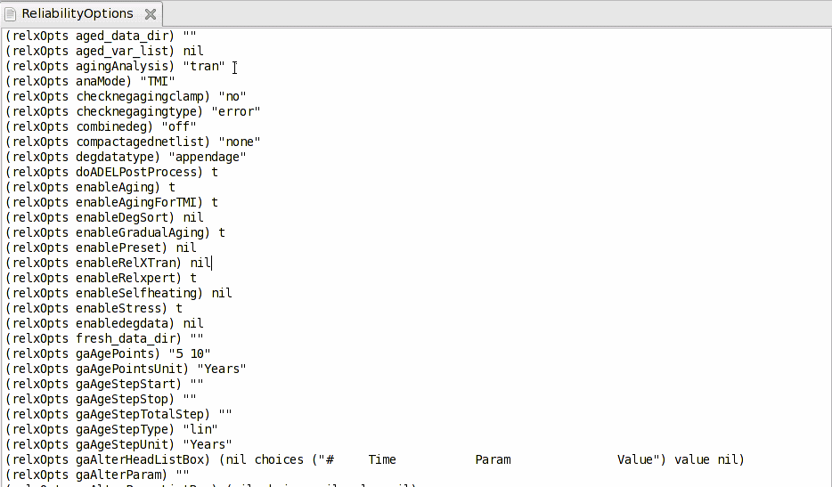
Loading Reliability Options
Perform the following steps to load the values of reliability options saved in a text file in the Reliability form.
-
Choose Simulation – Reliability – Load Options.
Alternatively, right-click the test name in the Setup assistant and choose Reliability—Load Options.
The Loading form appears.
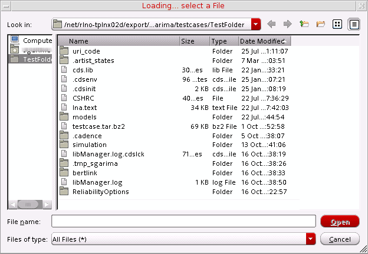 - Browse and select the file containing the values of reliability options.
-
Click Open.
The values of the reliability options specified in the text file are loaded in the Reliability form. To open the form and verify the values, choose Reliability – Setup to open the Reliability form.
Return to top